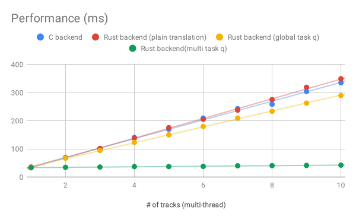

A summary of the C-to-Rust rewriting work for Firefox’s audio library on Mac OS.
I have written several posts to share some experience of rewriting a library from C/C++ into Rust.
In this post, I am going to summarize the achievements of rewriting the Firefox’s audio library, named Cubeb, from C++ into Rust.
The story about how the plan is made is in this post. The tips-and-effects can be summarized in this post.
Summary of Cubeb Oxidation on Mac OS
- Solve 6 data racing issues discovered by enlarging the test coverage
- Some issues exist for ages but their causes are not easy to be identified
- Boost the performance to 35x faster when starting multiple streams simultaneously
- A happy side effect when fixing data racing issues
- Hunt and fix 3 memory leaks
- The test coverage is enlarged to almost 80%
- The left 20% are mostly logs
- The amount of the regression bugs is pretty low
- The number of bugs are introduced by new Rust API is kept in single digits
Data-racing issues
The data-racing issues could be naturally detected
since all the tests within cargo test are run in parallel by default.
The audio library is heavily threaded code. It is based on various system APIs that may use mutex internally to query or update the device-related settings. In addition, the library API can be called on different threads anytime.
In the past, most of the data-racing issues are found by investigating the bug reported by Firefox users at the time when the code is already shipped to the wild.
Detecting data-racing issues effectively is a hard topic.
However, cargo test framework lowers the barriers.
All the tests within cargo test are run in parallel by default,
which means there is no need to write the custom code to run the tests
on different threads. The tests will be executed on the different threads automatically.
As a result, the problems caused by data-racing emerge much more frequently,
even when just running the unit tests.
It can show a surprising fact
that some of the APIs cannot be run at the same time.
Performance
The performance for starting multiple streams is boosted to 35x faster after fixing the data-racing issues.
Actually, this achievement is unexpected. Performance improvement is not included in the goals for this rewriting project but it natually happens. (The goal is simply set to do-not-cause-performance-regression.)
The following figure list the performance measurements when starting multiple streams at the same time on my MacBook Pro 2017:

(see all the measurement data here)
There are 4 different backends in the test:
- Blue: The original C backend
- Red: The first workable Rust backend rewritten from C code on a line-by-line basis
- It rewrites all the lines in a as-same-as-possible way
- Yellow: The version honors Rust style first
- It rewrites many abnormal Rust code translated plainly from C code
- To replace a custom mutex translated from C code,
some APIs are reimplemented with a gloabl task queue or
Mutex<T>
- Green: The version using stream-local task queues instead of a global task queue
There are some fun findings on the above figure.
Rewriting the code from C to Rust won’t improve the performance
There is no much performance differences between 1 and 2. If the Rust code is implemented in a similar way as what C code does, then their performances are roughly equal.
This is understandable. The perofrmance won’t be soared if the code are run in the same or similar way.
But if every line honors the Rust rule, the performance improve
The figure shows the performance improve a bit when the implementation goes from 2 to 3.
If the Rust code and the C code implement an idea in the same way, their performances won’t get much differences since the machine code generated from both languages might be similar.
However, when applying the Rust’s stricter-than-C rules, the performance may be improved.
Rust has strict rules for the ownership, borrowing,…etc to force the developers to think their code carefully and provide well-designed system libraries that lead to writing code in a good style. In this project, it turns out those strict rules also lead to better performances.
Those limits ends up helping us to find a better way to implement the library APIs.
The code translated from C plainly against the Rust’s rules
is implemented in another way to make the Rust compiler happy.
The story is around removing the custom mutex translated from C.
At the end, in the version 3, some APIs replace that custom mutex
by Rust’s standard Mutex<T>; some APIs are re-designed
to use a global task queue instead of using the custom mutex
and so the performance is prompted a bit then.
After replacing using custom mutex by using a gloabl task queue, it’s clear to see the task queue can become stream-local instead of gloabl so here comes version 4. By doing so, some data-racing issues can be avoided at the same time. Thus, the speed for starting multiple streams simultaneously is much faster.
To be fair, starting multiple streams simultaneously is not really a common case, so our developers didn’t pay too much attention on it before.
But the point needs to be highlighted is: Even I didn’t pay attention on prompting the performance, it naturally happens! This is amazing!
Memory leaks
Rewriting the code in a different language gives developer a chance to review: How we manage the memory across API calls? The memory created and lent outside via one API needs to be retrieved and destroyed properly in another API since the memory allocator used in the library may be different from the call sites.
Pairing the memory allocation and deallocation in the APIs counts on the human eyes so there is always a chance to miss some spots.
Fortunately, the LeakSanitizer can be enabled easily in Rust Nightly by
RUSTFLAGS="-Z sanitizer=leak" (e.g., RUSTFLAGS="-Z sanitizer=leak" cargo test).
Memory leaks can also be hunted by running tests within Xcode’s Instruments.
It’s a very powerful tool that can help identifying where the memory leaks are.
Xcode’s Instruments would need a executable to run tests.
The good news is the executable generated by cargo test
can be loaded to Xcode’s Instruments easily.
Test coverage
The test cases are the founding blocks to build the above achievements.
The data-racing issues can be detected by running tests
on different threads at the same time by simply calling cargo test.
Performance can be watched by running benchmark test within cargo bench.
Memory leaks and other memory issues can be hunted by running tests with
the sanitizers by RUSTFLAGS="-Z sanitizer=<SAN_NAME>" cargo test.
As long as the test cases are written properly, cargo frameworks provide enough supports for what developers need.
Enlarging the test-coverage to discover the problems earlier is one of the goal of the C-to-Rust rewriting project.
The grcov is a convenient tool that help monitoring the test coverage in our code. It can show the test-coverage status of the Rust project in a less-than-10-line script. In this project, the 79.2% lines (in src/backend) are covered within the tests. The left 20.8% code are mostly logs printed when turning on a preference so most of the product-level code are covered.
For now, the number of bugs intorduced by the new Rust backend itself. Most of the problem in the audio library occur in the original C backend as well. By enlarging the test coverage, many bugs are found before the code is shipped to the wild.
Conculsion
The experience I learned can be summarized in just one sentence:
Life is short, use Rust!